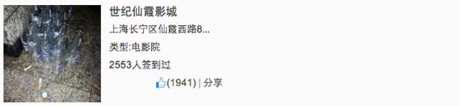

在网页中经常看见如下图的布局，bootstrap将这种结构抽离为了媒体对象：
基本结构：.media > (a.media-left[href="..."]> img.media-object) + (.media-body > .media-heading + ...)
| 类 | 名称 | 作用 |
.media | 媒体对象容器 | 容纳整个媒体对象 |
.media-object | 媒体对象的对象 | 媒体对象的对象，常常是图片 |
.media-body | 媒体对象内容 | 媒体对象主体内容，常常位于图片右侧 |
.media-heading | 媒体对象标题 | 描述媒体对象的标题 |
可以参考下图：
以下所说的图像组建指的是img.media-object 的父元素<a>；主体组建指.media-body
水平方向 ：为图像组建或主体组件其中添加类.media-left 或.media-right可使其处于块左边或右边（没有默认状态，每次都要添加）
垂直方向：默认为顶部对齐，可以为图像组建添加类.media-top，.media-middle或.media-bottom实现垂直方向的对齐，下面以图像组件为例（主体组件同理）：
嵌套媒体对象主要应用于系统评论，如下图：
实现方法：将.media 放置在上层的.media-body内即可实现：
实现方法：使用无序列表ul，添加类.media-list再将.media 作为列表项即可：.media-list > li.media * ?
我是W3cplus站长大漠，我在写Bootstrap框中的媒体对象测试用例我是W3cplus站长大漠，我在写Bootstrap框中的媒体对象测试用例我是W3cplus站长大漠，我在写Bootstrap框中的媒体对象测试用例我是W3cplus站长大漠，我在写Bootstrap框中的媒体对象测试用例我是W3cplus站长大漠，我在写Bootstrap框中的媒体对象测试用例我是W3cplus站长大漠，我在写Bootstrap框中的媒体对象测试用例我是W3cplus站长大漠，我在写Bootstrap框中的媒体对象测试用例我是W3cplus站长大漠，我在写Bootstrap框中的媒体对象测试用例我是W3cplus站长大漠，我在写Bootstrap框中的媒体对象测试用例我是W3cplus站长大漠，我在写Bootstrap框中的媒体对象测试用例我是W3cplus站长大漠，我在写Bootstrap框中的媒体对象测试用例我是W3cplus站长大漠，我在写Bootstrap框中的媒体对象测试用例我是W3cplus站长大漠，我在写Bootstrap框中的媒体对象测试用例我是W3cplus站长大漠，我在写Bootstrap框中的媒体对象测试用例我是W3cplus站长大漠，我在写Bootstrap框中的媒体对象测试用例我是W3cplus站长大漠，我在写Bootstrap框中的媒体对象测试用例我是W3cplus站长大漠，我在写Bootstrap框中的媒体对象测试用例我是W3cplus站长大漠，我在写Bootstrap框中的媒体对象测试用例
大漠写的《玩转Bootstrap》系列教程即将会在慕课网上发布
W3cplus站上还有很多教程...